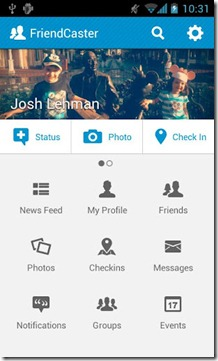
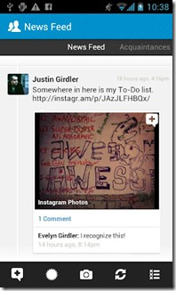
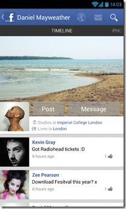

La aplicación de Facebook para Android siempre ha sido un tema muy polémico: que si las notificaciones no funcionan, que si los primeros diseños eran una basura o que sencillamente, deja mucho que desear. Seguramente hay gente a la que le gusta más la aplicación, pero es indiscutible que hay un descontento general con la aplicación. Pues bien, hace un par de días, Friendcaster, la alternativa más potente a la aplicación oficial de Facebook se ha vuelta a actualizar y deja más que nunca en evidencia a su hermana.
Friendcaster 5.0
La nueva versión de Friendcaster trae un montón de novedades. La principal y más clara es el cambio de look a una tendencia más Android ICS. Un pequeño detalle adicional que me ha encantado es que incorpora temas, por lo que si estás cansado del azul de Facebook puedes poner un tono verdoso al más puro estilo Android en toda la aplicación. Pero veamos que aporta Friendcaster con más detalle. Para empezar, esta aplicación tiene una capa adicional de seguridad, forzando siempre la conexión SSL. Dispone también de un sistema de notificaciones Push que, adivinad, ¡funciona! Recibiremos sin ningún problema los nuevos mensajes, avisos de cumpleaños y notificaciones de todo tipo inmediatamente. Podemos además escoger si este tipo de notificaciones aparezcan de forma emergente en nuestra pantalla de bloqueo o no.
Friendcaster nos va a permitir compartir enlaces de manera muy sencilla, escoger las diferentes opciones de privacidad para compartir un estado y compartir las publicaciones de tus amigos. Vamos, cosas tan básicas que parece mentira que la aplicación oficial aún no haya implementado. En el apartado multimedia tampoco se queda corto. Podremos subir múltiples fotos a la vez, visualizar fotos en las que has sido etiquetado y etiquetar tu también. Puedes también subir fotos a grupos y páginas de facebook. Con Friendcaster también podréis subir uno o varios vídeos a Facebook.
Por si se quedase corto, Friendcaster dispone de un widget de escritorio, utiliza Facebook Places, te muestra los eventos y páginas y usa la vibración y leds para notificarte. Por no hablar de un plar de plugins que hay para aplicar efectos a las fotografías al más puro estilo Instagram o añadir el Chat de Facebook. Vamos, que es un pedazo de aplicación que solo apreciaréis si os la bajáis. YA estáis tardando.
Rediseños amateurs
 Es tal el descontento con el diseño de la aplicación que la gente en pleno aburrimiento se dedica a rediseñar la app. Este es el trabajo de monkfishbandana una usuaria de Reddit que ha retocado un poco la aplicación Oficial de Facebook. Los cambios que ha hecho son
- Cambio de la Action Bar: cambiado el color a un gradiente azul y añadido un poco de ruido.
- Reducción del tamaño de los iconos de las barras contextuales. Cambiado también el icono de Ocultar por algo un poco menos ambiguo
- Añadido una barra vertical azul cuando un mensaje o una notificación está por leer.
- Cambiado el color del estado resaltado para que sea más concorde con el estilo de Facebook. Añadidos también los iconos de Me Gusta.
- Las fotos tienen sombras para añadir profundidad
- Restructuración del timeline.
Podéis ver todas la galería de imágenes aquí o aquí. Por el momento no se puede descargar pero no lo descarta en un futuro.